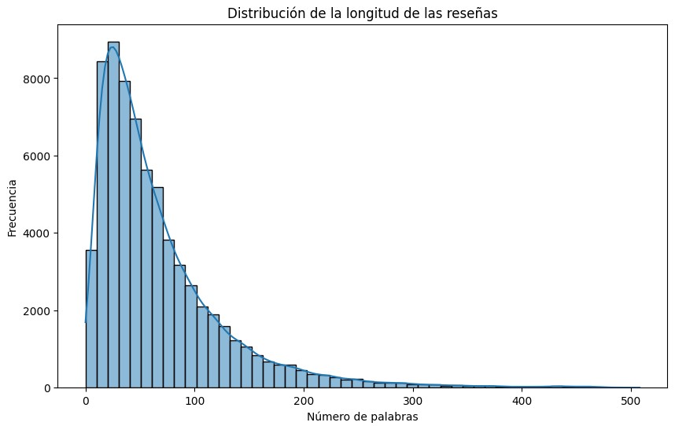
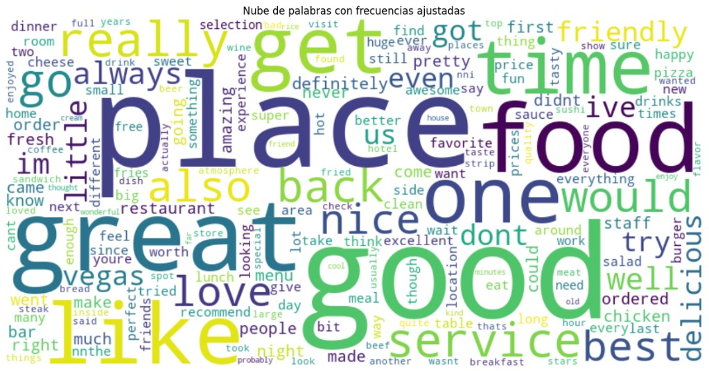
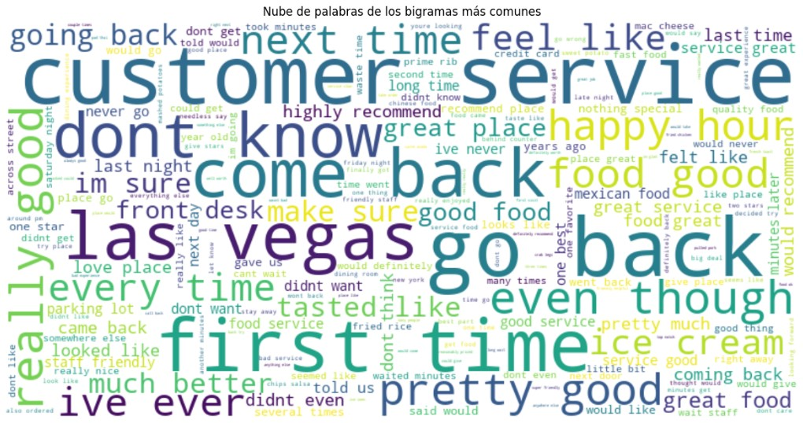
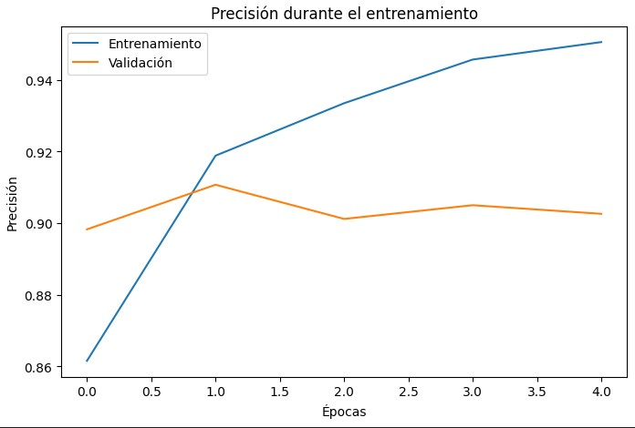
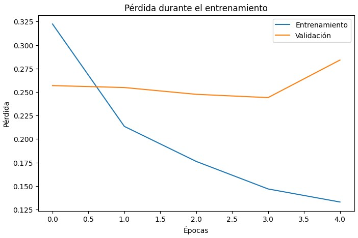

Yelp Review Sentiment Analysis
This project focuses on sentiment analysis of Yelp reviews ( dataset link ). We classify reviews as positive or negative using an LSTM-based model. Below is a detailed overview of the problem, the exploratory data analysis (EDA), preprocessing steps, model setup, and final results.
Problem Description
The dataset is large (560,000 training reviews and 38,000 test reviews). To avoid long training times, we sampled a subset of 70,000 reviews from train.csv and then split those into train, validation, and test sets. The objective: build a deep learning model that predicts sentiment (positive or negative) from the review text. Key steps were:
- Data Exploration: Understand distribution of reviews, text length, frequent words, etc.
- Data Preprocessing: Remove HTML tags, URLs, numeric characters, special symbols, and so on; tokenize and lemmatize each review.
- Subset & Partition: Randomly pick 70,000 reviews, then split them (train/val/test).
- Model Building: LSTM neural network with an Embedding layer, tuned hyperparameters (embedding size, LSTM units, vocab size).
- Evaluation: Check accuracy, confusion matrix, ROC curve, and AUC on a separate test set.
Exploratory Data Analysis (EDA)
Before building the model, we performed thorough EDA on the sample of 70,000 reviews:
- Class Distribution: We verified a balanced or near-balanced distribution of positive vs. negative reviews in the subset.
- Review Length: Mean length ~67 words, with 25% of reviews below 27 words and 75% below 88 words. Very long reviews (300+ words) were relatively rare. 
- Common Words: Frequent tokens included “good,” “place,” “food,” and “time” in both positive and negative reviews, though the context and intensifiers differ by sentiment. 
- Bigram Analysis: Bigrams like “customer service,” “go back,” and “first time” highlighted typical phrases in Yelp reviews. 
- Comparative Stats by Sentiment: Negative reviews often had more past-tense verbs and slightly more exclamation marks on average; positive reviews tended to be shorter (mean ~59 words vs. ~75 for negative) but used certain favorable adjectives more frequently.
One critical EDA step was verifying that the top 5,000 words accounted for ~90% of the total word usage in our training set.
We used Python’s Counter to compute the cumulative coverage of the most frequent words. Here’s a snippet
that plots the coverage of the vocabulary (up to 10,000 words), drawing lines at
coverage=90% and vocab_size=5000:
As the figure shows, using the top 5,000 words yields about 90% coverage of all tokens in the train subset. This greatly reduces the embedding dimension requirements while retaining the majority of relevant vocabulary.
Additionally, histogram analysis of review length revealed that ~300 tokens covers the vast majority of reviews. Therefore, truncating or padding sequences to a maximum length of 300 tokens prevents extremely long outliers from skewing training while capturing the essential text of typical Yelp reviews.
Preprocessing
Each review was lowercased, stripped of HTML tags, URLs, and special characters, then tokenized
and lemmatized (removing stopwords). The final cleaned text was stored in cleaned_review.
Example advanced preprocessing function:
def preprocess_text_advanced(text):
# Convert to lowercase
text = text.lower()
# Remove HTML tags
text = BeautifulSoup(text, 'html.parser').get_text()
# Remove URLs
text = re.sub(r'http\S+|www\S+', '', text)
# Remove @mentions
text = re.sub(r'@[A-Za-z0-9]+','', text)
# Remove digits
text = re.sub(r'\d+', '', text)
# Remove special characters, underscores
text = re.sub(r"\W+|_", ' ', text)
# Remove extra spaces
text = " ".join(text.split())
# Tokenize
words = word_tokenize(text)
# Lemmatize and remove stopwords
words = [lm.lemmatize(w) for w in words if w not in stop_words]
return " ".join(words)
LSTM Model and Tokenization
After EDA and data cleaning, we randomly selected 70,000 reviews for training and validation.
Using Tokenizer(num_words=5000) ensures only the most frequent 5,000 words
are kept in our vocabulary. Then, we converted text sequences to integer indices and applied
pad_sequences with maxlen=300 to unify input length.
For the model, we used a network with an Embedding layer (dim=300), followed by a Bidirectional LSTM layer, and several Dense layers with Dropout. The model was trained for 5 epochs with a batch size of 128, using categorical_crossentropy as the loss function and adam as the optimizer. Reviews were tokenized using a Keras Tokenizer with vocab_size=5000, and pad_sequences were applied to a maximum length of 300.
model = Sequential()
model.add(Embedding(input_dim=5000, output_dim=300, input_length=300))
model.add(Bidirectional(LSTM(units=128, dropout=0.2)))
model.add(Dense(128, activation='relu'))
model.add(Dropout(0.5))
model.add(Dense(64, activation='relu'))
model.add(Dense(2, activation='softmax'))
model.compile(loss='categorical_crossentropy', optimizer='adam', metrics=['accuracy'])
model.summary()
The embedding dimension (300) is large enough to capture semantic nuances of the top 5,000 words, and limiting our sequence length to 300 tokens prevents overfitting on extremely lengthy reviews.
Training and Evaluation
The model was trained for 5 epochs with batch_size=128. The precition in validation change between 89-91% during the 5 epochs (See the graph below)
 After training, we evaluated on a separate test set of 50,000 unseen reviews. Below are the key outcomes:
Matriz de Confusión:
[[22218 2805]
[ 2020 22957]]
Classification Report:
precision recall f1-score support
negative 0.92 0.89 0.90 25023
positive 0.89 0.92 0.90 24977
accuracy 0.90 50000
macro avg 0.90 0.90 0.90 50000
weighted avg 0.90 0.90 0.90 50000
AUC: 0.9644
The model reaches ~90% accuracy and an AUC of 0.9644, indicating strong separation between positive and negative sentiment. This performance is achieved with a reduced vocabulary (5,000 words) and fixed sequence length (300 tokens), which strike a balance between coverage and computational efficiency.